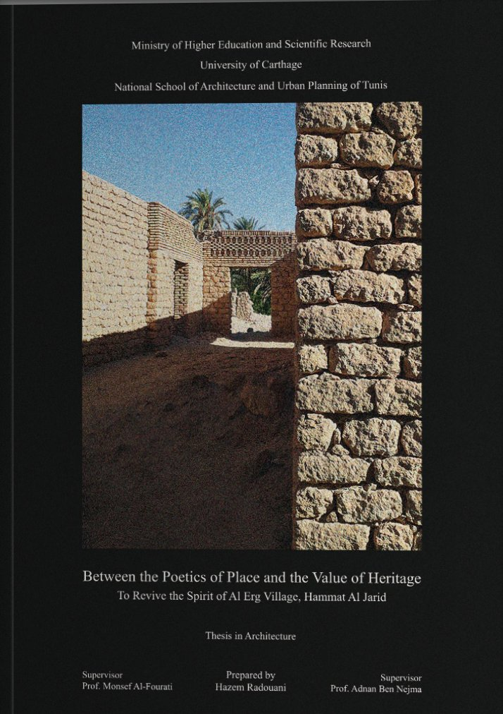

Academic · Thesis · 2024
Between the Poetics of Place
and the Value of Heritage
To Revive the Spirit of Al Erg Village, Hammat Al Jarid
- Institution
- ENAU · Université de Carthage
- Supervisors
- Prof. Monsef Al-Fourati · Prof. Adnan Ben Nejma
- Distinction
- Mention Très Bien à l'unanimité · June 2024
Degree thesis in architecture submitted at the National School of Architecture and Urban Planning of Tunis, Université de Carthage. Awarded Highest Honours with a unanimous jury. The project proposes a rehabilitation strategy for the abandoned ksar village of ARG in the Jérid oasis system of southern Tunisia, working simultaneously across territorial, urban, and architectural scales.
The research draws on heritage documentation carried out with the Société de Préservation du Village d'ARG over two years prior to the thesis, grounding the design work in direct material knowledge of the site. The theoretical framework engages the Italian school of urban morphology and the practices of Carlo Scarpa and Giorgio Grassi.
Highest Honours · Unanimous Jury · ENAU, Université de Carthage · June 2024